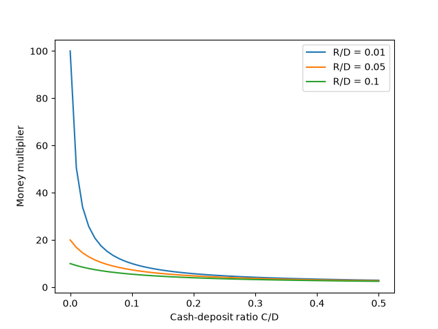
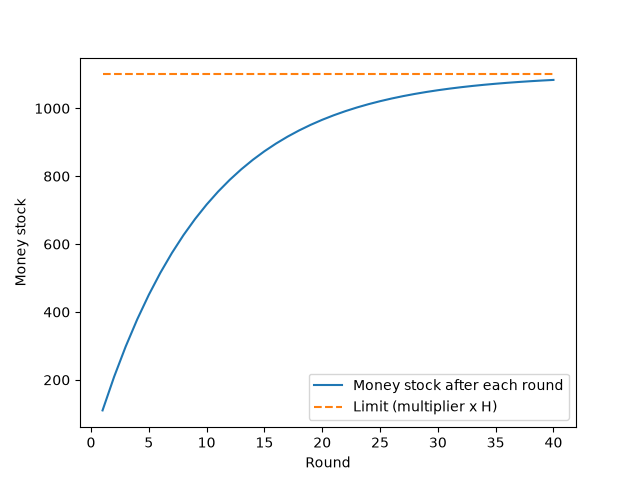
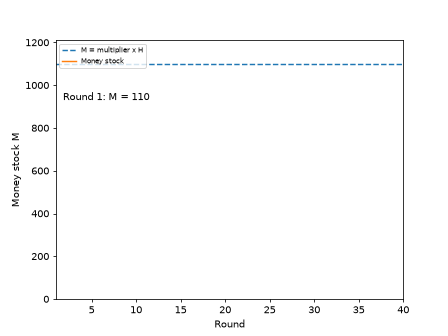

第 6 章: 貨幣供給と貨幣乗数¶
6.1 この章の地図¶
第 2 部は、貨幣市場と IS-LM です。その入口が、貨幣の供給です。経済に出回る貨幣（マネーストック）は、中央銀行が好きな量に決めるものではありません。中央銀行が直接動かせるのは、ハイパワードマネー（現金通貨と準備預金）です。民間の銀行が、預金を貸し出し、その貸出が、また預金になることで、貨幣は、ハイパワードマネーの何倍にも増えます。この章では、その倍率（貨幣乗数）を関数にして、金融政策の手段（公開市場操作・法定準備率操作）の効果と、信用創造が一定の値に収束する様子を、テストで確かめます。

| 項目 | 内容 |
|---|---|
| 経済学の題材 | マネーストック統計（M1・M2・M3・広義流動性）、ハイパワードマネー、貨幣乗数、金融政策の手段、信用創造 |
| 使う Python の機能 | 関数、リスト、for ループ、テスト（pytest）。NumPy・pandas は、この章では使いません |
| 新しく導入するライブラリ | なし（Matplotlib は、第 1 章で導入済み） |
| 完成形 | m1、m3、broad_liquidity、monetary_base、money_multiplier、money_stock、open_market_operation、reserve_requirement_change、credit_creation_path |
| ファイル | 実装: lib/chapter06/money_supply.py、lib/chapter06/plot.py（図）／テスト: test/chapter06/test_money_supply.py、test/chapter06/test_plot.py（自分で書くときは、practice/chapter06/ に、同じ名前で作ります） |
| データ | なし（手計算できる小さな例だけ） |
経済学の式とコードの対応¶
| 経済学 | 式 | コード |
|---|---|---|
| M1 | M1 = 現金通貨 + 預金通貨 | m1(currency, demand_deposits) |
| M3 | M3 = M1 + 準通貨 + CD | m3(m1_value, quasi_money, cd) |
| 広義流動性 | 広義流動性 = M3 + 投資信託・国債など | broad_liquidity(m3_value, investment_trusts, bonds) |
| ハイパワードマネー | H = 現金通貨 + 準備預金 | monetary_base(currency, reserves) |
| 貨幣乗数 | (C/D + 1) ÷ (C/D + R/D) | money_multiplier(cash_ratio, reserve_ratio) |
| マネーストック | M = 貨幣乗数 × H | money_stock(cash_ratio, reserve_ratio, base) |
| 公開市場操作 | 買いオペで H が増え、売りオペで減る | open_market_operation(base, amount, operation) |
| 法定準備率操作 | 準備率を変えたあとの M | reserve_requirement_change(base, cash_ratio, new_reserve_ratio) |
| 信用創造 | 貸出と預金のくり返しで M が増える | credit_creation_path(base, cash_ratio, reserve_ratio, rounds) |
前提とする既存の章¶
この章は、独立した話題です。この連載の第 1〜5 章を、前提にしません。
| できること | 場所 |
|---|---|
関数と pytest のテストを書く（Red → Green → Refactor）、リストと for ループを使う、Matplotlib で線を描く |
第 1 シリーズ 第 1〜7 章 |
貨幣と金融政策は、第 1 シリーズの第 13 章（IS-LM）にも出てきます。この記事は、独立して読めるように、自分のコードを持ちます。
6.2 準備¶
サンプルコードは、リポジトリの apps/macro-basics-programming/python/ にあります。環境の作り方は、第 1 章 の 1.2 節と同じです。
cd apps/macro-basics-programming/python
uv sync
uv run pytest test/chapter06
34 passed
自分でコードを書くときは、practice/chapter06/ を作って、完成形と同じ名前（money_supply.py・test_money_supply.py）のファイルに書きます。テストは、uv run pytest practice/chapter06 で動かします。完成形（lib/ と test/）は、答え合わせ用です。 自分で書き終えてから、開いてください。
6.3 予想する¶
ある国の、現金通貨は 100、預金は 1000、銀行が中央銀行に預けた準備預金は 10 です（単位は、兆円とします。架空の数値です）。
- 現金預金比率 C/D と 準備預金比率 R/D は、いくつですか。ハイパワードマネー Hは、いくつですか。貨幣乗数と、マネーストック（現金 + 預金）は、いくつですか
- 現金預金比率が 0.2 に上がると、貨幣乗数は、いくつになりますか。準備預金比率が 0.02 に上がると、いくつになりますか。どちらも、乗数は、下がりますか
- 中央銀行が、買いオペで、ハイパワードマネーを 22 増やすと、マネーストックは、いくら増えますか
- 現金を持たない（C/D = 0）社会で、準備率が 0.1 のとき、100 の預金が新しく生まれると、銀行は、その 90% を貸し出し、貸出は、また預金になります。これをくり返すと、預金の合計は、いくつに近づきますか
- 現金通貨 80、預金通貨 520、準通貨 300、CD 20、投資信託 60、国債など 40 のとき、M1・M3・広義流動性は、いくつですか
6.4 貨幣供給の考え方¶
貨幣とマネーストック¶
貨幣 = 現金 + 預金です。経済全体の貨幣の量を、マネーストックと呼びます。日本銀行は、貨幣に近いものを、範囲の広さで、いくつかの指標にしています。
| 指標 | 内容 |
|---|---|
| M1 | 現金通貨 + 預金通貨（全預金取扱機関） |
| M2 | 現金通貨 + 預金通貨 + 準通貨 + CD の、国内銀行等の分だけに限る |
| M3 | M1 + 準通貨 + CD（全預金取扱機関）。代表的な指標 |
| 広義流動性 | M3 + 投資信託・国債など |
範囲が広いほど、大きな値になります。M2 は、M3 と、数える金融機関の範囲が違うだけで、足し算の形は同じです。この章では、関数にしません。
ハイパワードマネー¶
ハイパワードマネー（別名マネタリーベース）は、現金通貨 + 準備預金です。中央銀行が、直接動かせる貨幣です。マネーストックは、民間の銀行と家計の行動で決まるので、中央銀行が直接決められません。
貨幣乗数¶
現金預金比率 C/D（家計が、預金に対して持つ現金の割合）と、準備預金比率 R/D（銀行が、預金に対して準備として置く割合）を使うと、マネーストックとハイパワードマネーの関係が、1 つの式になります。
M = 現金 C + 預金 D
H = 現金 C + 準備預金 R
H の分子と分母を、D で割ると、次のようになります。
M ÷ H = (C/D + 1) ÷ (C/D + R/D)
この右辺が、貨幣乗数です。M = 貨幣乗数 × H と書けます。C/D = 0.1、R/D = 0.01 なら、乗数は 1.1 ÷ 0.11 = 10 です。現金預金比率が上がると、銀行に戻らない現金が増えるので、乗数は下がります。準備預金比率が上がると、貸し出せる額が減るので、乗数は下がります。
金融政策の手段¶
| 手段 | 動かすもの | 効果 |
|---|---|---|
| 公開市場操作 | ハイパワードマネー H | 買いオペ（債券を買い、貨幣を出す）で増え、売りオペで減る |
| 法定準備率操作 | 準備預金比率 R/D | 準備率の引上げで、貨幣乗数が下がる |
| 金利政策 | 金利 | 貨幣の需要に働きかける（次の章以降） |
この章では、H を動かす公開市場操作と、貨幣乗数を動かす法定準備率操作を、関数にします。準備預金比率 R/D は、法定準備率に等しい（銀行は、法定準備だけを置く）と簡単にします。
信用創造¶
銀行は、預金の一部を準備に置き、残りを貸し出します。貸し出された貨幣は、使われて、別の人の預金になります。この預金から、また一部が貸し出されます。このくり返しが、信用創造です。
C/D = 0、R/D = 0.1 で、100 の預金が生まれる場合を考えます。90 が貸し出されて、90 の預金が生まれ、81、72.9、… と続きます。預金の合計は、100 + 90 + 81 + … = 100 ÷ 0.1 = 1000 に収束します。ラウンドを続けるほど、合計は、貨幣乗数 × H に近づきます。
6.5 プログラミング¶
Red: ストックのテスト¶
最初のテストを書きます。M1・M3・広義流動性は、足し算です。範囲が広いほど大きいことも、テストにします。
import pytest
from lib.chapter06.money_supply import (
broad_liquidity,
credit_creation_path,
m1,
m3,
monetary_base,
money_multiplier,
money_stock,
open_market_operation,
reserve_requirement_change,
)
def test_M1は現金通貨と預金通貨の和() -> None:
assert m1(80, 520) == 600
def test_M3はM1に準通貨とCDを足した値() -> None:
assert m3(600, 300, 20) == 920
def test_広義流動性はM3に投資信託と国債などを足した値() -> None:
assert broad_liquidity(920, 60, 40) == 1020
m1 がまだないので、テストは失敗します（Red）。
Green: ストックを実装する¶
def _check_amount(value: float, name: str) -> None:
if value < 0:
raise ValueError(f"{name}は、0 以上にする")
def m1(currency: float, demand_deposits: float) -> float:
"""M1 = 現金通貨 + 預金通貨（全預金取扱機関）。"""
_check_amount(currency, "現金通貨")
_check_amount(demand_deposits, "預金通貨")
return currency + demand_deposits
def m3(m1_value: float, quasi_money: float, cd: float) -> float:
"""M3 = M1 + 準通貨 + CD（譲渡性預金）。代表的なマネーストックの指標。"""
_check_amount(m1_value, "M1")
_check_amount(quasi_money, "準通貨")
_check_amount(cd, "CD")
return m1_value + quasi_money + cd
def broad_liquidity(m3_value: float, investment_trusts: float, bonds: float) -> float:
"""広義流動性 = M3 + 投資信託・国債など。"""
_check_amount(m3_value, "M3")
_check_amount(investment_trusts, "投資信託")
_check_amount(bonds, "国債など")
return m3_value + investment_trusts + bonds
def monetary_base(currency: float, reserves: float) -> float:
"""ハイパワードマネー（マネタリーベース）H = 現金通貨 + 準備預金。"""
_check_amount(currency, "現金通貨")
_check_amount(reserves, "準備預金")
return currency + reserves
import と補助関数（写すときに足す）
記事の抜粋には、import と、先頭が _ の補助関数・定数を、省いています。完成形のファイルの先頭にある、次の部分を、写してください。
lib/chapter06/money_supply.py
_BUY = "買いオペ"
_SELL = "売りオペ"
def _check_amount(value: float, name: str) -> None:
if value < 0:
raise ValueError(f"{name}は、0 以上にする")
def _check_ratios(cash_ratio: float, reserve_ratio: float) -> None:
if cash_ratio < 0:
raise ValueError("現金預金比率 C/D は、0 以上にする")
if not 0 < reserve_ratio <= 1:
raise ValueError("準備預金比率 R/D は、0 より大きく 1 以下にする")
ストックは、負になりません。負の値は、どの量が負なのかが分かるエラーにします（テストは、test_ストックの要素が負ならエラー）。
貨幣乗数¶
C/D = 0.1、R/D = 0.01 で、乗数は 10 です。C/D が上がる、R/D が上がるときに、乗数が下がることを、テストにします。
CASH_RATIO = 0.1 # 現金預金比率 C/D
RESERVE_RATIO = 0.01 # 準備預金比率 R/D
BASE = 110.0 # ハイパワードマネー（現金 100 + 準備預金 10）
def test_貨幣乗数は現金預金比率0_1と準備率0_01で10() -> None:
assert money_multiplier(CASH_RATIO, RESERVE_RATIO) == pytest.approx(10)
def test_現金預金比率が上がると貨幣乗数は下がる() -> None:
assert money_multiplier(0.2, RESERVE_RATIO) == pytest.approx(1.2 / 0.21)
assert money_multiplier(0.2, RESERVE_RATIO) < money_multiplier(0.1, RESERVE_RATIO)
def _check_ratios(cash_ratio: float, reserve_ratio: float) -> None:
if cash_ratio < 0:
raise ValueError("現金預金比率 C/D は、0 以上にする")
if not 0 < reserve_ratio <= 1:
raise ValueError("準備預金比率 R/D は、0 より大きく 1 以下にする")
def money_multiplier(cash_ratio: float, reserve_ratio: float) -> float:
"""貨幣乗数 = (C/D + 1) ÷ (C/D + R/D)。C/D・R/D が上がると下がる。"""
_check_ratios(cash_ratio, reserve_ratio)
return (cash_ratio + 1) / (cash_ratio + reserve_ratio)
比率の範囲を、エラーで守ります。現金預金比率が負、準備預金比率が 0 以下や 1 超は、意味がありません。
C/D が 0 以上、R/D が 0 より大きいなら、分母 C/D + R/D は必ず正で、0 除算は、準備預金比率のチェックで先に止まります。乗数は常に 1 以上で、現金を持たず（C/D = 0）、全額を準備に置く（R/D = 1）と、信用創造が起きず、ちょうど 1 になります。
def test_現金を持たず全額を準備に置くなら貨幣乗数は1() -> None:
assert money_multiplier(0.0, 1.0) == pytest.approx(1)
def test_比率が範囲外ならエラー() -> None:
with pytest.raises(ValueError, match="現金預金比率"):
money_multiplier(-0.1, RESERVE_RATIO)
with pytest.raises(ValueError, match="準備預金比率"):
money_multiplier(CASH_RATIO, 0.0)
with pytest.raises(ValueError, match="準備預金比率"):
money_multiplier(CASH_RATIO, -0.01)
with pytest.raises(ValueError, match="準備預金比率"):
money_multiplier(CASH_RATIO, 1.01)
マネーストック¶
マネーストックは、乗数 × H です。式の変形が、正しいことを、定義から確かめます。預金 D は H ÷ (C/D + R/D)、現金は C/D × D で、現金 + 預金が、乗数 × H に一致し、現金 + 準備が、H に一致するはずです。
def test_マネーストックは貨幣乗数にハイパワードマネーを掛けた値() -> None:
assert money_stock(CASH_RATIO, RESERVE_RATIO, BASE) == pytest.approx(1100)
def test_マネーストックは現金と預金の和に一致する() -> None:
deposits = BASE / (CASH_RATIO + RESERVE_RATIO)
cash = CASH_RATIO * deposits
assert cash + deposits == pytest.approx(
money_stock(CASH_RATIO, RESERVE_RATIO, BASE)
)
assert cash + RESERVE_RATIO * deposits == pytest.approx(BASE)
def money_stock(cash_ratio: float, reserve_ratio: float, base: float) -> float:
"""マネーストック M = 貨幣乗数 × ハイパワードマネー H。"""
_check_amount(base, "ハイパワードマネー")
return money_multiplier(cash_ratio, reserve_ratio) * base
金融政策の手段¶
買いオペは H を増やし、売りオペは H を減らします。買いオペ後のマネーストックの増加は、貨幣乗数の倍になることを、テストにします。
def test_買いオペはハイパワードマネーを増やす() -> None:
assert open_market_operation(BASE, 22, "買いオペ") == pytest.approx(132)
def test_買いオペ後のマネーストックの増加は貨幣乗数の倍() -> None:
before = money_stock(CASH_RATIO, RESERVE_RATIO, BASE)
after = money_stock(
CASH_RATIO, RESERVE_RATIO, open_market_operation(BASE, 22, "買いオペ")
)
assert after - before == pytest.approx(10 * 22)
def open_market_operation(base: float, amount: float, operation: str) -> float:
"""公開市場操作後のハイパワードマネー。買いオペで増え、売りオペで減る。"""
_check_amount(base, "ハイパワードマネー")
_check_amount(amount, "操作の額")
if operation == _BUY:
return base + amount
if operation == _SELL:
if amount > base:
raise ValueError("売りオペの額が、ハイパワードマネーを超えている")
return base - amount
raise ValueError(f"操作は「{_BUY}」か「{_SELL}」にする: {operation}")
売りオペの額が、H を超えると、H が負になってしまいます。ちょうど H と同じ額なら、0 になって有効で、超えたらエラーです（境界）。操作の名前を間違えたときも、エラーにします。
def test_売りオペの額がハイパワードマネーを超えるとエラー() -> None:
assert open_market_operation(BASE, BASE, "売りオペ") == 0
with pytest.raises(ValueError, match="超えて"):
open_market_operation(BASE, BASE + 1, "売りオペ")
法定準備率の操作は、準備率を変えたあとのマネーストックです。準備率を上げると減り、下げると増えます。
def test_準備率を上げるとマネーストックは減る() -> None:
after = reserve_requirement_change(BASE, CASH_RATIO, 0.02)
assert after == pytest.approx(BASE * 1.1 / 0.12)
assert after < money_stock(CASH_RATIO, RESERVE_RATIO, BASE)
def reserve_requirement_change(
base: float, cash_ratio: float, new_reserve_ratio: float
) -> float:
"""法定準備率を new_reserve_ratio にしたあとのマネーストック。"""
return money_stock(cash_ratio, new_reserve_ratio, base)
信用創造¶
信用創造を、ラウンドごとに、追います。各ラウンドで、手元の資金 x を、預金 d と、現金 C/D × d に分けます（x = (1 + C/D) d）。銀行は、預金の R/D を準備に置き、残りを貸し出します。貸出が、次のラウンドの手元の資金になります。
最初のテストは、手計算できる値にします。H = 110、C/D = 0.1 なら、1 回目の預金は 100、現金は 10 で、マネーストックは 110（= H）です。2 回目は、貸出が 0.99 × 100 = 99 で、預金は 90 になり、マネーストックは 110 + 99 = 209 です。
def test_信用創造の2回目までの合計() -> None:
path = credit_creation_path(BASE, CASH_RATIO, RESERVE_RATIO, 2)
assert path == pytest.approx([110, 209])
def credit_creation_path(
base: float, cash_ratio: float, reserve_ratio: float, rounds: int
) -> list[float]:
"""信用創造を、ラウンドごとに追い、各ラウンド後のマネーストックを返す。
各ラウンドで、手元の資金 x を、預金 d と現金 C/D × d に分ける（x = (1 + C/D) d）。
銀行は、預金 d の R/D を準備に置き、残りを貸し出す。貸出は、次のラウンドの
手元の資金になる。
"""
_check_amount(base, "ハイパワードマネー")
_check_ratios(cash_ratio, reserve_ratio)
if rounds < 1:
raise ValueError("ラウンド数は、1 以上にする")
deposit = base / (1 + cash_ratio)
total = 0.0
path = []
for _ in range(rounds):
total += deposit
path.append((1 + cash_ratio) * total)
deposit *= (1 - reserve_ratio) / (1 + cash_ratio)
return path
ラウンドを続けると、マネーストックは、貨幣乗数 × H に近づき、超えません。現金を持たない場合は、預金の合計が、準備率の逆数倍になります。
def test_信用創造は現金を持たなければ預金が準備率の逆数倍になる() -> None:
path = credit_creation_path(100, 0.0, 0.1, 200)
assert path[0] == pytest.approx(100)
assert path[1] == pytest.approx(190)
assert path[-1] == pytest.approx(1000)
def test_信用創造は貨幣乗数とハイパワードマネーの積に近づく() -> None:
path = credit_creation_path(BASE, CASH_RATIO, RESERVE_RATIO, 200)
assert path[-1] == pytest.approx(money_stock(CASH_RATIO, RESERVE_RATIO, BASE))
assert path == sorted(path)
assert all(a < 1100 for a in path)
詳しく見る（収束の理由。必要なときに開く）
1 ラウンドごとに、預金は、前のラウンドの (1 − R/D) ÷ (1 + C/D) 倍になります。C/D = 0.1、R/D = 0.01 なら、0.99 ÷ 1.1 = 0.9 倍です。この比が 1 より小さいので、等比数列の和が、収束します。
預金の合計 = 最初の預金 ÷ (1 − 比) = H ÷ (1 + C/D) ÷ ((C/D + R/D) ÷ (1 + C/D)) = H ÷ (C/D + R/D)
マネーストックは、(1 + C/D) × 預金の合計 = 貨幣乗数 × H で、ラウンドごとの計算と乗数の式は、同じことを別の方法で表しているので、テストで突き合わせられます。
予想の答え合わせ¶
予想した答えを、プログラムで確かめます。
from lib.chapter06.money_supply import (
broad_liquidity,
credit_creation_path,
m1,
m3,
monetary_base,
money_multiplier,
money_stock,
open_market_operation,
)
currency, deposits, reserves = 100, 1000, 10
cash_ratio = currency / deposits
reserve_ratio = reserves / deposits
base = monetary_base(currency, reserves)
print("C/D, R/D:", cash_ratio, reserve_ratio)
print("H:", base)
print("貨幣乗数:", round(money_multiplier(cash_ratio, reserve_ratio), 4))
print("マネーストック:", round(money_stock(cash_ratio, reserve_ratio, base), 4))
print("乗数（C/D = 0.2）:", round(money_multiplier(0.2, reserve_ratio), 4))
print("乗数（R/D = 0.02）:", round(money_multiplier(cash_ratio, 0.02), 4))
before = money_stock(cash_ratio, reserve_ratio, base)
bought = open_market_operation(base, 22, "買いオペ")
after = money_stock(cash_ratio, reserve_ratio, bought)
print("買いオペ 22 のマネーストック増加:", round(after - before, 4))
path = credit_creation_path(100, 0.0, 0.1, 200)
print("最初の 5 ラウンドの預金の合計:", [round(v, 2) for v in path[:5]])
print("200 ラウンド後の預金の合計:", round(path[-1], 4))
first = m1(80, 520)
second = m3(first, 300, 20)
print("M1, M3, 広義流動性:", first, second, broad_liquidity(second, 60, 40))
C/D, R/D: 0.1 0.01
H: 110
貨幣乗数: 10.0
マネーストック: 1100.0
乗数（C/D = 0.2）: 5.7143
乗数（R/D = 0.02）: 9.1667
買いオペ 22 のマネーストック増加: 220.0
最初の 5 ラウンドの預金の合計: [100.0, 190.0, 271.0, 343.9, 409.51]
200 ラウンド後の預金の合計: 1000.0
M1, M3, 広義流動性: 600 920 1020
- 1 つ目の問い: C/D は 0.1、R/D は 0.01、H は 110 です。貨幣乗数は 10 で、マネーストックは 1100 です。現金 100 + 預金 1000 = 1100 と、一致します
- 2 つ目の問い: C/D が 0.2 なら、乗数は約 5.71、R/D が 0.02 なら、約 9.17 です。どちらも、下がります。動かした幅が違う（C/D は +0.1、R/D は +0.01）ので、下がり方の大きさは、単純には比べられません
- 3 つ目の問い: 買いオペ 22 で、マネーストックは 220 増えます（乗数 10 × 22）。ハイパワードマネーの増加の、10 倍です
- 4 つ目の問い: 預金の合計は、100、190、271、343.9、409.51、… と増えて、1000 に近づきます（100 ÷ 0.1）。現金を持たない場合の、マネーストックは、預金の合計に等しいので、この列は、マネーストックでもあります
- 5 つ目の問い: M1 は 600、M3 は 920、広義流動性は 1020 です。範囲が広いほど、大きくなります
図¶
貨幣乗数の図を、描く関数を、テストから書きます。準備率ごとに 1 本の線を引き、座標が、手計算の値（C/D = 0 のとき 1 ÷ R/D など）と一致することを、確かめます。座標を取り出す補助関数 xs・ys、線の本数と軸の名前のテストは、test/chapter06/test_plot.py を見てください。
描画のテストと実装（後回しにしても、学習は成り立ちます）
def test_貨幣乗数の線の座標() -> None:
ax = plot_money_multiplier([0.0, 0.1, 0.2], [0.01, 0.1]).axes[0]
assert xs(ax.lines[0]) == pytest.approx([0.0, 0.1, 0.2])
assert ys(ax.lines[0]) == pytest.approx([100, 10, 1.2 / 0.21])
assert ys(ax.lines[1]) == pytest.approx([10, 5.5, 1.2 / 0.3])
描画のテストと実装（後回しにしても、学習は成り立ちます）
def plot_money_multiplier(
cash_ratios: list[float], reserve_ratios: list[float]
) -> Figure:
"""現金預金比率 C/D を横軸に、準備預金比率 R/D ごとの貨幣乗数を描く。"""
fig, ax = plt.subplots()
for reserve_ratio in reserve_ratios:
ax.plot(
cash_ratios,
[money_multiplier(c, reserve_ratio) for c in cash_ratios],
label=f"R/D = {reserve_ratio}",
)
ax.set_xlabel("Cash-deposit ratio C/D")
ax.set_ylabel("Money multiplier")
ax.legend()
plt.close(fig)
return fig
信用創造の図（plot_credit_creation）は、同じ作りで、ラウンドごとのマネーストックと、上限（乗数 × H）を、1 つの図に描きます。テストと実装は、test/chapter06/test_plot.py と lib/chapter06/plot.py を見てください。

ノートブックで試す¶
数字を書き換えて、結果と図が変わるのを、手軽に確かめられます。apps/macro-basics-programming/python/notebooks/ch06_money_supply.ipynb を開き、「Parameters」のセルの数字（ハイパワードマネー、現金預金比率、準備預金比率、公開市場操作の額）を書き換えて、上から順に実行します。起動は、アプリのディレクトリで uv run --with jupyterlab jupyter lab notebooks/ です。
動かして見る¶
信用創造を、40 ラウンド追います。ラウンドを重ねるごとに、マネーストックが、貨幣乗数 × ハイパワードマネーという上限（破線）へ、近づきます。

このアニメーションは、lib/animations/ の関数で作っています（uv run python -m tools.render_animations で、GIF を書き出します）。写経は、不要です。動きを見て、式と図の対応を、確かめてください。
実行結果¶
uv run pytest test/chapter06
34 passed
6.6 規則で言うと¶
- マネーストック = 貨幣乗数 × ハイパワードマネー。 乗数は (C/D + 1) ÷ (C/D + R/D)。C/D・R/D が上がると、下がる
- 中央銀行が直接動かすのは、ハイパワードマネーと準備率。 買いオペで H が増え、売りオペで減る。マネーストックは、乗数を通して、H の何倍も動く
- 境界は、テストで固定する。 売りオペの額が H と同じなら有効（0 になる）、超えたらエラー。準備預金比率 R/D は、0 より大きく、1 以下
混同しやすい点を、表にまとめます。
| 混同しやすい点 | 違い |
|---|---|
| マネーストックとハイパワードマネー | マネーストックは、現金 + 預金で、民間の行動を含んで決まる。ハイパワードマネーは、現金 + 準備預金で、中央銀行が直接動かせる |
| 現金預金比率 C/D と、準備預金比率 R/D | C/D は、家計が決める（現金をどれだけ持つか）。R/D は、銀行が置く準備（法定準備率で、下限が決まる） |
| 準備率の引上げと、売りオペ | どちらも、マネーストックを減らす。引上げは乗数を下げ、売りオペは H を減らす |
| M1 と M3 | M3 は、M1 に、準通貨と CD を足した、範囲の広い指標 |
このモデルが成り立たない場面¶
- 現金預金比率と準備預金比率は、一定とは限りません。 景気や、金融不安で、家計は現金を多く持ち、銀行は準備を多く置きます。乗数は、不安定です
- 貸出を、銀行が、自由に増やせるとは限りません。 貸出先（資金需要）が、なければ、信用創造は、進みません。H を増やしても、マネーストックが、思ったほど増えないことがあります
- 準備預金は、法定準備だけとは限りません。 実際は、法定を超えた準備（超過準備）も、置かれます。この章は、R/D を、法定準備率に等しいと、簡単にしています
6.7 練習問題¶
| 種類 | 問題 |
|---|---|
| 想起 | 本文を閉じて、money_multiplier の最初のテスト（C/D = 0.1、R/D = 0.01 で、乗数 10）を書いてください |
| 生成 | 解説を見る前に、ハイパワードマネーを 1 だけ増やしたときの、マネーストックの増加を返す money_per_base(cash_ratio, reserve_ratio) を、テストから書いてください。C/D = 0.1、R/D = 0.01 では、いくつになりますか |
| 多様 | 準備率を 0.01 から 0.1 に上げると、乗数は、いくつになりますか。先に予想してから、確かめてください。現金預金比率が 0 のとき、乗数は、準備率の逆数になりますか |
| 交互 | 第 1 シリーズの第 3 章のリスト内包表記で、現金預金比率が 0、0.1、0.2、0.3、0.4 のときの乗数（R/D = 0.01）を、一度に計算してください。比率が上がるほど、乗数は、小さくなっていますか |
解答（先に自分で取り組んでから、開いてください）
想起:
def test_貨幣乗数は現金預金比率0_1と準備率0_01で10() -> None:
assert money_multiplier(0.1, 0.01) == pytest.approx(10)
生成: H = 1 のときのマネーストックが、そのまま、貨幣乗数です。
def money_per_base(cash_ratio, reserve_ratio):
return money_stock(cash_ratio, reserve_ratio, 1.0)
def test_Hを1増やしたときのマネーストックの増加は乗数に等しい() -> None:
assert money_per_base(0.1, 0.01) == pytest.approx(10)
assert money_per_base(0.2, 0.01) == pytest.approx(1.2 / 0.21)
C/D = 0.1、R/D = 0.01 では、10 です。
多様: 準備率が 0.1 なら、乗数は 1.1 ÷ 0.2 = 5.5 です。準備率を 10 倍にしても、乗数は、10 分の 1 にはなりません（5.5 は、10 の約半分）。現金預金比率が 0 なら、乗数は 1 ÷ R/D で、準備率の逆数になります（R/D = 0.1 なら 10）。
def test_準備率を上げると乗数は下がり現金がなければ逆数になる() -> None:
assert money_multiplier(0.1, 0.1) == pytest.approx(5.5)
assert money_multiplier(0.1, 0.1) < money_multiplier(0.1, 0.01)
assert money_multiplier(0.0, 0.1) == pytest.approx(10)
assert money_multiplier(0.0, 0.05) == pytest.approx(20)
交互:
def test_現金預金比率が上がるほど乗数は小さい() -> None:
ratios = [0.0, 0.1, 0.2, 0.3, 0.4]
values = [money_multiplier(c, 0.01) for c in ratios]
assert values[:2] == pytest.approx([100, 10])
assert values == sorted(values, reverse=True)
assert len(set(values)) == len(values)
乗数は、100、10、約 5.71、約 4.19、約 3.41 と、単調に小さくなります。現金預金比率が 0 から 0.1 になるだけで、乗数は、10 分の 1 になります。
6.8 振り返り¶
- マネーストックとハイパワードマネーの違いを、「誰が直接動かせるか」で、説明できますか
- 現金預金比率が上がると、乗数が下がるのは、なぜですか。準備率の引上げと売りオペは、どう違いますか
- 信用創造のラウンドごとの計算と乗数の式が、同じ値になることを、どう確かめましたか
6.9 まとめ¶
- M1（現金通貨 + 預金通貨）= 600、M3（M1 + 準通貨 + CD）= 920、広義流動性（M3 + 投資信託・国債など）= 1020 を、関数にした。範囲が広いほど大きい
- ハイパワードマネー H = 現金 + 準備預金 = 110 と、貨幣乗数 (C/D + 1) ÷ (C/D + R/D) = 10 から、マネーストック M = 乗数 × H = 1100（現金 100 + 預金 1000）を求めた
- 買いオペで H を 22 増やすと、M は 220 増える。準備率を 0.02 に上げると、乗数は約 9.17 に下がり、M は約 1008.33 に減る
- 信用創造を、ラウンドごとに追うと、マネーストックは、乗数 × H（1100）に、超えずに近づく。現金を持たない場合は、預金の合計が、準備率の逆数倍（1000）になる
- 次の章では、貨幣の需要と、貨幣市場を均衡させる LM 曲線を、学びます